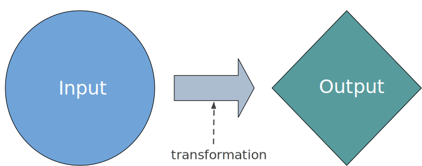
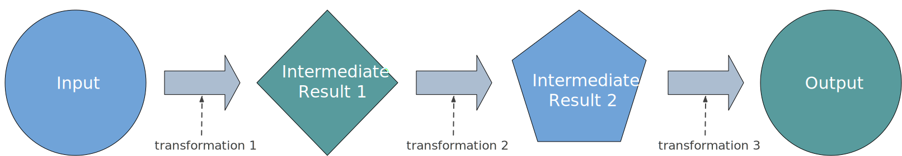
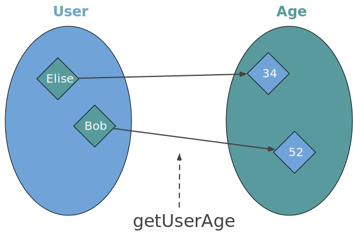
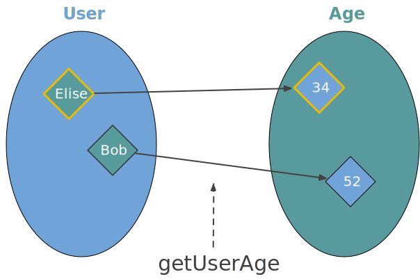
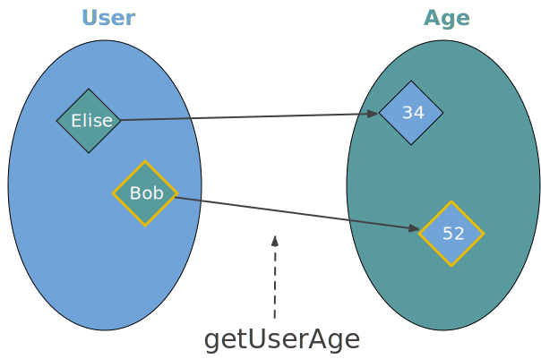
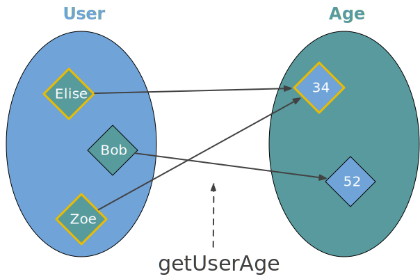
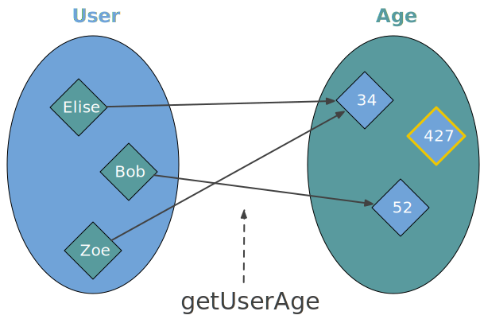
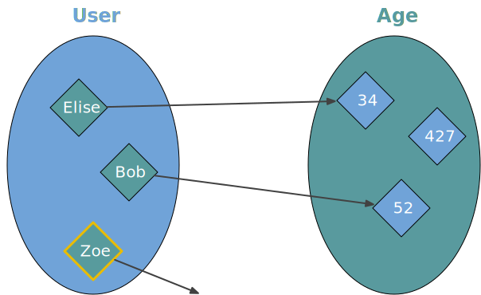
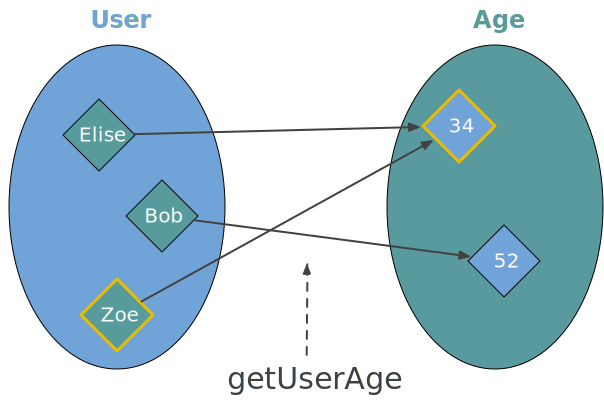

background-image: url(../img/fp-tower/website-background.svg) class: center, middle, white .title[Functions<br> in <br>Functional Programming] --- # FP == Val Functions <br> .forty-seven-left[ ```scala val isPositive: Int => Boolean = number => number >= 0 val isEven: Int => Boolean = number => number % 2 == 0 ``` ] -- <br><br><br><br><br><br><br> .forty-seven-left[ ```scala List(-6, 2, 7, -3, 0).filter(`isPositive`) // res0: List[Int] = List(2, 7, 0) List(-6, 2, 7, -3, 0).filter(`isEven`) // res1: List[Int] = List(-6, 2, 0) ``` ] --- # Function in imperative programming <br> .sixty-two-left[ ```scala def procedure(input1: Int, input2: String): String = { var var1 = 0 var var2 = otherProcedure1(input1, 3) var1 = otherProcedure2(var2, input2) return var1 } ``` ] --- # Function in imperative programming <br> .sixty-two-left[ ```scala def procedure(input1: Int, input2: String): String = { `var var1 = 0` var var2 = otherProcedure1(input1, 3) var1 = otherProcedure2(var2, input2) return var1 } ``` ] --- # Function in imperative programming <br> .sixty-two-left[ ```scala def procedure(input1: Int, input2: String): String = { var var1 = 0 var var2 = `otherProcedure1(input1, 3)` var1 = `otherProcedure2(var2, input2)` return var1 } ``` ] --- # Function in imperative programming <br> .sixty-two-left[ ```scala def procedure(input1: Int, input2: String): String = { var var1 = 0 var var2 = otherProcedure1(input1, 3) var1 = otherProcedure2(var2, input2) `return var1` } ``` ] --- # Function in functional programming <br><br> .sixty-seven-left[ .center[  ]] --- # Program in functional programming <br><br><br>  --- # An FP Function is an immutable Map <br> .forty-seven-left[ ```scala val function: Map[Input, Output] = Map( input1 -> output1, input2 -> output2, input3 -> output3, input4 -> output4, // ... ) ``` ] --- # An FP Function is an immutable Map .sixty-two-left[  ] -- .thirty-seven-right[ <br><br><br><br><br><br><br> ```scala val getUserAge: Map[User, Int] = Map( User("Elise", ...) -> 34, User("Bob" , ...) -> 52, ) ``` ] --- # An FP Function is an immutable Map .sixty-two-left[  ] .thirty-seven-right[ <br><br><br><br><br><br><br> ```scala val getUserAge: Map[User, Int] = Map( User("`Elise`", ...) -> `34`, User("Bob" , ...) -> 52, ) ``` ] --- # An FP Function is an immutable Map .sixty-two-left[  ] .thirty-seven-right[ <br><br><br><br><br><br><br> ```scala val getUserAge: Map[User, Int] = Map( User("Elise", ...) -> 34, User("`Bob`" , ...) -> `52`, ) ``` ] --- # An FP Function is an immutable Map .sixty-two-left[  ] .thirty-seven-right[ <br><br><br><br><br><br><br> ```scala val getUserAge: Map[User, Int] = Map( User("`Elise`", ...) -> `34`, User("Bob" , ...) -> 52, User("`Zoe`" , ...) -> `34`, ) ``` ] --- # An FP Function is an immutable Map .sixty-two-left[  ] .thirty-seven-right[ <br><br><br><br><br><br><br> ```scala val getUserAge: Map[User, Int] = Map( User("Elise", ...) -> 34, User("Bob" , ...) -> 52, User("Zoe" , ...) -> 34, ) ``` ] --- # 1. All inputs must return an output .sixty-two-left[  ] .thirty-seven-right[ <br><br><br><br><br><br><br> ```scala val getUserAge: Map[User, Int] = Map( User("Elise", ...) -> 34, User("Bob" , ...) -> 52, ) ``` ] --- class: medium-code # 1. All inputs must return an output .fifty-seven-left[ ```scala sealed trait Json case class JsonNumber(value: Int ) extends Json case class JsonString(value: String) extends Json def jsonToInt(json: Json): Int = json match { case JsonNumber(number) => number } ``` ```scala jsonToInt(JsonNumber(12)) // res: Int = 12 ``` ] --- class: medium-code # 1. All inputs must return an output .fifty-seven-left[ ```scala sealed trait Json case class JsonNumber(value: Int ) extends Json case class JsonString(value: String) extends Json def `jsonToInt`(json: Json): Int = json match { case JsonNumber(number) => number } ``` ```scala jsonToInt(JsonNumber(12)) // res: Int = 12 ``` ] --- class: medium-code # 1. All inputs must return an output .fifty-seven-left[ ```scala sealed trait Json case class JsonNumber(value: Int ) extends Json case class JsonString(value: String) extends Json def jsonToInt(json: Json): Int = json match { case JsonNumber(number) => number } ``` ```scala jsonToInt(JsonString("Hello")) // scala.`MatchError`: JsonString(Hello) ``` ] --- class: medium-code # 1. All inputs must return an output .eighty-two-left[ ```scala sealed trait Json case class JsonNumber(value: Int ) extends Json case class JsonString(value: String) extends Json def jsonToInt(json: Json): Int = json match { case JsonNumber(number) => number case JsonString(text) => `throw new IllegalArgumentException`("cannot convert a JsonString to a number") } ``` ] --- # 2. Mapping is static .forty-seven-left[ ```scala val function: Map[Input, Output] = scala.collection.`immutable`.Map( input1 -> output1, input2 -> output2, input3 -> output3, input4 -> output4, // ... ) ``` ] --- # 2. Mapping is static .forty-seven-left[ ```scala val function: Map[Input, Output] = scala.collection.immutable.Map( input1 -> output1, input2 -> output2, input3 -> output3, input4 -> output4, // ... ) ``` ] <br><br><br><br><br><br><br><br><br><br><br> .forty-seven-left[ ```scala function(input1) // res = `output1` function(input1) // tomorrow // res = `output1` ``` ] --- # 2. Mapping is static .sixty-two-left[  ] .thirty-seven-right[ <br><br><br><br><br><br> ```scala val zoe = User("Zoe", ...) getUserAge(zoe) // res: Int = 34 getUserAge(zoe) // 10 years later // res: Int = 34 ``` ] --- class: medium-code # 3. Cannot perform actions .eighty-two-left[ ```scala def createNewBlogPost(author: User, title: String, content: String): Future[Unit] = httpClient.post( path = "/user/${author.userId}/blog", payload = json"""{"title" : $title, "content" : $content }""" ) ``` ```scala def getAllUser: Future[List[User]] = db.query( sql"SELECT userId, userName, createdAt from users" ).as[User] ``` ```scala def auditLog(service: String, message: String): Unit = println(s"[$service] $message") ``` ] --- class: medium-code # 3. Cannot perform actions .eighty-two-left[ ```scala def `createNewBlogPost`(author: User, title: String, content: String): Future[Unit] = httpClient.post( path = "/user/${author.userId}/blog", payload = json"""{"title" : $title, "content" : $content }""" ) ``` ```scala def getAllUser: Future[List[User]] = db.query( sql"SELECT userId, userName, createdAt from users" ).as[User] ``` ```scala def auditLog(service: String, message: String): Unit = println(s"[$service] $message") ``` ] --- class: medium-code # 3. Cannot perform actions .eighty-two-left[ ```scala def createNewBlogPost(author: User, title: String, content: String): Future[Unit] = httpClient.post( path = "/user/${author.userId}/blog", payload = json"""{"title" : $title, "content" : $content }""" ) ``` ```scala def `getAllUser`: Future[List[User]] = db.query( sql"SELECT userId, userName, createdAt from users" ).as[User] ``` ```scala def auditLog(service: String, message: String): Unit = println(s"[$service] $message") ``` ] --- class: medium-code # 3. Cannot perform actions .eighty-two-left[ ```scala def createNewBlogPost(author: User, title: String, content: String): Future[Unit] = httpClient.post( path = "/user/${author.userId}/blog", payload = json"""{"title" : $title, "content" : $content }""" ) ``` ```scala def getAllUser: Future[List[User]] = db.query( sql"SELECT userId, userName, createdAt from users" ).as[User] ``` ```scala def `auditLog`(service: String, message: String): Unit = println(s"[$service] $message") ``` ] --- # 3. Cannot perform actions .forty-seven-left[ ```scala val function: Map[Input, Output] = Map( input1 -> output1, input2 -> output2, input3 -> output3, input4 -> output4, // ... ) ``` ] --- # 3. Cannot perform actions .forty-seven-left[ ```scala val function: Map[Input, `Unit`] = Map( input1 -> (), input2 -> (), input3 -> (), input4 -> (), // ... ) ``` ] --- # 3. Cannot perform actions .forty-seven-left[ ```scala val function: Map[Input, Unit] = Map( input1 -> `()`, input2 -> `()`, input3 -> `()`, input4 -> `()`, // ... ) ``` ] --- # 3. Cannot perform actions .forty-seven-left[ ```scala val function: Map[Input, Unit] = Map( input1 -> (), input2 -> (), input3 -> (), input4 -> (), // ... ) ``` ```scala function(input1) // res = `()` function(input3) // res = `()` ``` ] --- # 3. Cannot perform actions .forty-seven-left[ ```scala val function: Map[Input, Unit] = Map( input1 -> (), input2 -> (), input3 -> (), input4 -> (), // ... ) ``` ```scala val function: Input => Unit = `_ => ()` ``` ] --- class: medium-code # 3. Cannot perform actions .eighty-two-left[ ```scala def createNewBlogPost(author: User, title: String, content: String): `Future[Unit]` = httpClient.post( path = "/user/${author.userId}/blog", payload = json"""{"title" : $title, "content" : $content }""" ) ``` ```scala def getAllUser: Future[List[User]] = db.query( sql"SELECT userId, userName, createdAt from users" ).as[User] ``` ```scala def auditLog(service: String, message: String): `Unit` = println(s"[$service] $message") ``` ] --- class: white background-image: url(../img/fp-tower/website-background.svg) <br><br> # .white[FP functions] <br> .large[ 1. Return a value for all inputs 1. Be a static mapping 1. Cannot perform actions ] --- class: white background-image: url(../img/fp-tower/website-background.svg) <br><br> # .white[FP functions] <br> .large[ 1. Total 1. Deterministic 1. Pure or without side effect ] --- # Is the function isWeekend an FP function? .forty-seven-left[ ```scala sealed trait Day case object Monday extends Day case object Tuesday extends Day case object Wednesday extends Day case object Thursday extends Day case object Friday extends Day case object Saturday extends Day case object Sunday extends Day ``` ] .forty-seven-right[ <br> ```scala def isWeekend(day: Day): Boolean = day match { case Saturday | Sunday => true case _ => false } ``` ] --- # Is the function isWeekend an FP function? .forty-seven-left[ ```scala def isWeekend(day: Day): Boolean = day match { case Saturday | Sunday => true case _ => false } ``` ```scala val isWeekend: Map[Day, Boolean] = Map( Monday -> false, Tuesday -> false, Wednesday -> false, Thursday -> false, Friday -> false, Saturday -> true, Sunday -> true, ) ``` ] --- class: medium-code # Is the function createBlogEntry an FP function? .fifty-two-left[ ```scala import java.time.LocalDate import java.util.UUID case class BlogEntry( id : UUID, title : String, publishedAt: LocalDate, ) def createBlogEntry(title: String): BlogEntry = BlogEntry( id = UUID.randomUUID(), title = title, publishedAt = LocalDate.now() ) ``` ] --- class: medium-code # Is the function createBlogEntry an FP function? .fifty-two-left[ ```scala import java.time.LocalDate import java.util.UUID case class BlogEntry( id : UUID, title : String, publishedAt: LocalDate, ) def createBlogEntry(title: String): BlogEntry = BlogEntry( id = `UUID.randomUUID()`, title = title, publishedAt = LocalDate.now() ) ``` ] .forty-seven-right[ ```scala createBlogEntry("Hello") // res: BlogEntry = BlogEntry( // `e200c6c0-c034-4b30-8f13-be44cc927739`, // "Hello", // 2021-01-06 // ) createBlogEntry("Hello") // res: BlogEntry = BlogEntry( // `bc899606-da5e-4c1f-a143-0deae306651b`, // "Hello", // 2021-01-06 // ) ``` ] --- class: medium-code # Is the function createBlogEntry an FP function? .fifty-two-left[ ```scala import java.time.LocalDate import java.util.UUID case class BlogEntry( id : UUID, title : String, publishedAt: LocalDate, ) def createBlogEntry(title: String): BlogEntry = BlogEntry( id = UUID.randomUUID(), title = title, publishedAt = `LocalDate.now()` ) ``` ] .forty-seven-right[ ```scala createBlogEntry("Hello") // res: BlogEntry = BlogEntry( // e200c6c0-c034-4b30-8f13-be44cc927739, // "Hello", // `2021-01-06` // ) createBlogEntry("Hello") // tomorrow // res: BlogEntry = BlogEntry( // bc899606-da5e-4c1f-a143-0deae306651b, // "Hello", // `2021-01-07` // ) ``` ] --- class: medium-code # Is the function addUser an FP function? <br> ```scala import scala.concurrent.Future case class User(id: Long, name: String) class UserRepository(db: Db) { // assume some database library def addUser(user: User): Future[Unit] = db.run(sql"""INSERT INTO users (id, name) VALUES (${user.id}, ${user.name})""") } ``` --- class: medium-code # Is the function addUser an FP function? <br> ```scala import scala.concurrent.Future case class User(id: Long, name: String) class UserRepository(db: Db) { // assume some database library def addUser(user: User): Future[`Unit`] = db.`run`(sql"""INSERT INTO users (id, name) VALUES (${user.id}, ${user.name})""") } ``` --- class: medium-code # Is the function max an FP function? <br> ```scala def max(list: List[Int]): Option[Int] = { var state = Option.empty[Int] for (element <- list) state match { case None => state = Some(element) case Some(currentMax) => if (currentMax < element) state = Some(element) } state } ``` --- class: medium-code # Is the function max an FP function? <br> ```scala def max(list: List[Int]): Option[Int] = { `var state` = Option.empty[Int] for (element <- list) state match { case None => `state =` Some(element) case Some(currentMax) => if (currentMax < element) `state =` Some(element) } state } ```